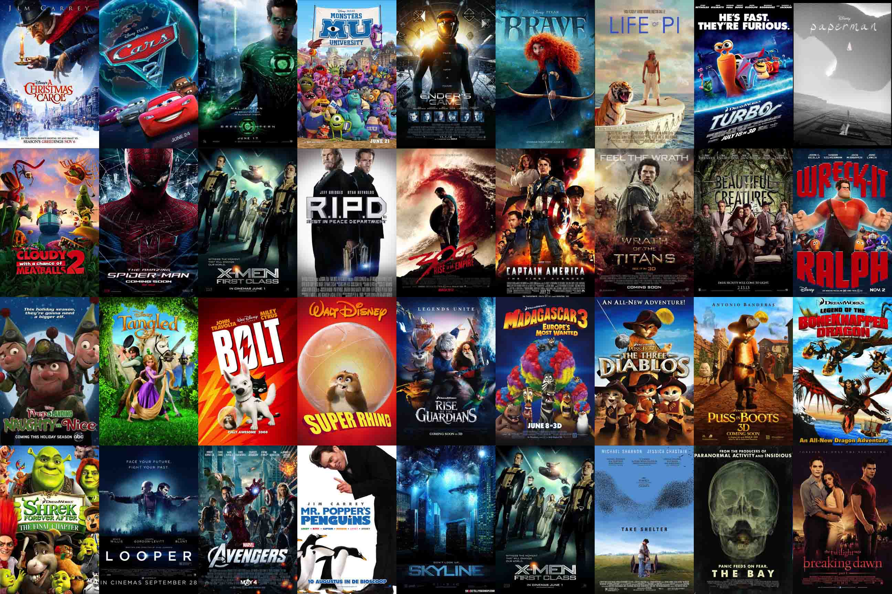

Kisskh - Watch Asian Dramas & Movies in 4K Online Eng Sub
- Kisskh live
- Kisskh TV live
- Kisskh Official live
Kisskh is your go-to platform for streaming the best Asian dramas and movies online in stunning 4K quality. With a seamless, user-friendly interface and a vast library of titles, Kisskh makes it easy for fans to discover and enjoy their favorite Korean, Chinese, Thai, and Japanese content — all with English subtitles. Immerse yourself in gripping stories, unforgettable characters, and high-definition entertainment anytime, anywhere.
Kisskh – Watch Asian Dramas & Movies in 4K with English Subtitles
Kisskh offers an exceptional viewing experience for fans of Asian dramas and movies. Enjoy your favorite titles in stunning 4K resolution, where every scene is brought to life with vivid detail. Beyond trending shows, Kisskh also features hidden gems, allowing viewers to discover and appreciate a broader range of Asian storytelling.
What Does Kisskh Represent?
Kisskh serves as a gateway to Asian culture, offering a curated collection of dramas and movies that reflect unique storytelling and rich cultural nuances. It connects global audiences to the heart of Asian cinema and television, enhancing appreciation through easy access and English subtitles.
Is Kisskh Safe to Use?
While Kisskh provides access to a wide variety of content, users are encouraged to prioritize online safety. Using a trusted VPN can help protect your privacy and ensure a more secure streaming experience.
Does Kisskh Require Login?
No login is required to use Kisskh. This no-registration feature offers quick, hassle-free access to content, making it ideal for casual viewers and binge-watchers alike.
Key Features of Kisskh
- 4K Streaming: Experience ultra-clear visuals that bring each scene to life.
- English Subtitles: Enjoy content without language barriers.
- Vast Library: Discover a wide selection of genres, from lighthearted rom-coms to gripping thrillers.
- Intuitive Interface: Navigate easily through a clean, user-friendly design.
Why Choose Kisskh?
- Exclusive Content: Access dramas and films that are often unavailable on mainstream platforms.
- Frequent Updates: New content is added regularly to keep your watchlist fresh and exciting.
- Community-Friendly: Join fans worldwide in discovering and discussing the latest Asian entertainment.
What Kind of Content is Available on Kisskh?
Kisskh features a rich and diverse content library, including:
- Dramas: From emotional romances to intense historical sagas.
- Movies: A variety of genres, including action, comedy, horror, and fantasy.
- Reality Shows: Culturally engaging formats with real-life interactions.
Best Alternatives to Kisskh
If you're exploring other streaming options, consider these popular alternatives:
- Dramacool
- Kissasian
- Nkiri
- Dramanice
- Starflix
FAQs
Is Kisskh Legal?
The legality of Kisskh depends on your country’s copyright laws. Users should ensure compliance with local regulations when accessing content.
Stay Updated with the New Kisskh Website
Visit Kisskh regularly for new features and the latest drama and movie releases.
Are There Ads on Kisskh?
Yes, as a free platform, Kisskh may display ads to support its services. These are generally brief and help keep the service accessible.
Can I Watch Kisskh Content Offline?
Offline viewing is not currently supported, but check back for updates as features may evolve over time.
Is Kisskh Free?
Yes, Kisskh is completely free to use. However, ad-supported content helps keep the platform running.
How Do I Access 4K Streaming on Kisskh?
Simply choose a title marked as available in 4K. The 4K option will be shown during playback if supported.
Which Titles Are Available in 4K?
The library is updated frequently. Look for specific indicators on each title's page to see if 4K resolution is available.
What Should I Do If Kisskh Isn’t Working?
If the platform isn't loading or playing content properly, try refreshing the page, checking your internet connection, or using a different browser or device.
Can I Download From Kisskh?
Downloading may not be officially supported. Refer to the website's help section or announcements for updates on download availability.
Conclusion
Kisskh remains a top destination for fans of Asian dramas and movies seeking high-quality, easy-to-access entertainment. With its 4K streaming, subtitle support, and extensive content range, it delivers a cinematic experience from the comfort of your screen. Whether you're a long-time K-drama lover or a newcomer to Asian cinema, Kisskh offers something for every viewer.